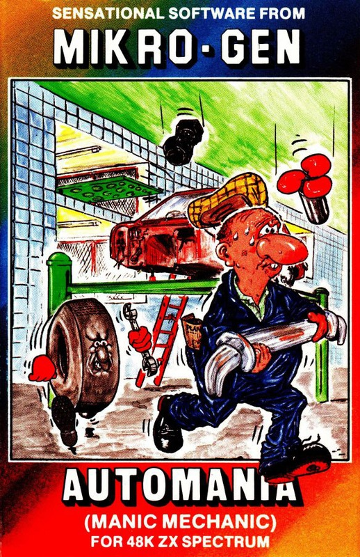
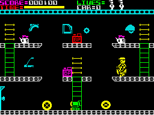
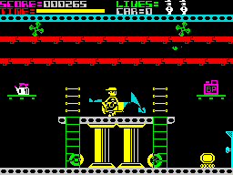

Automania


{kind=link}

| Publisher: | Mikrogen |
| Price: | £6.95 |
| Year: | 1984 |
| Source: | CRASH, Issue 7 |

Meet a new hero — your average British Worker by the name of Wally Week. Wally Week is destined for big things — like a three percent wage rise next month. Wally works on a car assembly line, in fact he is the assembly line. In this highly original platform type game you must help Wally build a series of cars.

The game has two basic screens, starting off in the stock room. There are three platforms with a single ladder to the first level and two at either end from the second to the third. On the two upper levels are situated the six parts of a car. What you do is walk Wally along the floor, up the ladders and collect the parts, one at a time and then take them down and through the door to the assembly room. This contains a large hydraulic lift, and on its first level are some of the already assembled bits of a car. When Wally walks his collected stock part over the appropriate area of the vehicle the carried part is automatically deposited in its correct position. Then it’s back to the stock room for the next bit. Each piece has a time limit.

Sounds simple enough, even for your average British workman. But then, this is a computer game so nothing is as it looks! The factory is populated with robots and bouncing tyres which kill on contact, and from the overhead gantries in the assembly room, falling air cooling blades cause problems. Fortunately, Wally can jump. To add to his problems the gantries in the stock room keep moving in and out and in difficult positions are various static objects which are designed to tempt an honest man away from his work like teapots (mind the oil cans as well).
When (if) all six parts are correctly assembled, the car is driven off to be replaced by the rudiments of the next one. In all there are ten cars to build starting off with a humble 2CV and ending up with... ah, well that’s up to you.
CRITICISM
‘Automania is a game about Wally — the game itself is far from being a wally game. In fact it’s a superb game with excellent graphics and animation. I really enjoyed it. This will be a game of the month I’m sure. I found the choice of the first car very appropriate for Wally — you know, the upturned pram on wheels vegetarian mobile. This is probably the best game yet from Mikrogen.’
‘Automania has some of the best animation and realistic graphics that I have ever seen. All the graphics are large and colourful, and needless to say they move smoothly. There is much more to this game than just building a car — it’s a race against time — a very fast ticking clock. Colour and sound is well used with a continuous ‘manic’ style tune throughout, which may be stopped if it drives you mad. The best game that Mikrogen have ever produced and worth buying.’
‘Great colour, great sound, amazing graphics. The animation of Wally is just superb. Not only is he a large, highly detailed caricature (rather Andy Capp like) but he is beautifully animated with plenty of neat touches from his flat cap and beer paunch to the cheeky way he turns to look out at you after completing some particularly difficult task well. On top of that comes a game which has been well planned and implemented to provide just the right combination of temptingness with skill difficulties. Timing jumps in two directions over a static obstacle where you must land or take off from a constantly moving platform is very tricky. Automania is highly playable and extremely addictive — don’t be put off by what at first appears to be a rather plodding speed, a bit Bear Bovver-like, Wally walks faster than some of the obstacles, slower than others and all in all it makes for a properly paced game of high entertainment value.’
COMMENTS
| Control keys: | Preset — Q/A up/down, O/P left/right, M to jump, but all keys may be user-defined |
| Joystick: | ZX 2, Kempston, and almost any other via UDK |
| Keyboard play: | Very responsive |
| Use of colour: | Very good |
| Graphics: | Superb, with excellent animation |
| Sound: | Great tune (continuous) with well used sound effects — sound may be switched off |
| Skill levels: | 1 |
| Lives: | 3 |
| Screens: | 2 but with 10 cars to build in each |
| Originality: | Very original use of traditional game components |
| General rating: | Very good to excellent, playable and addictive. |
| Use of Computer: | 92% |
| Graphics: | 89% |
| Playability: | 86% |
| Getting Started: | 83% |
| Addictive qualities: | 88% |
| Value For Money: | 91% |
| Overall: | 88% |